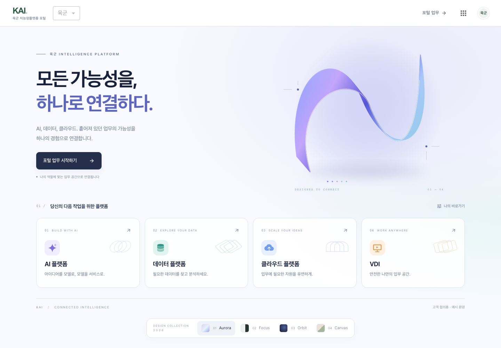
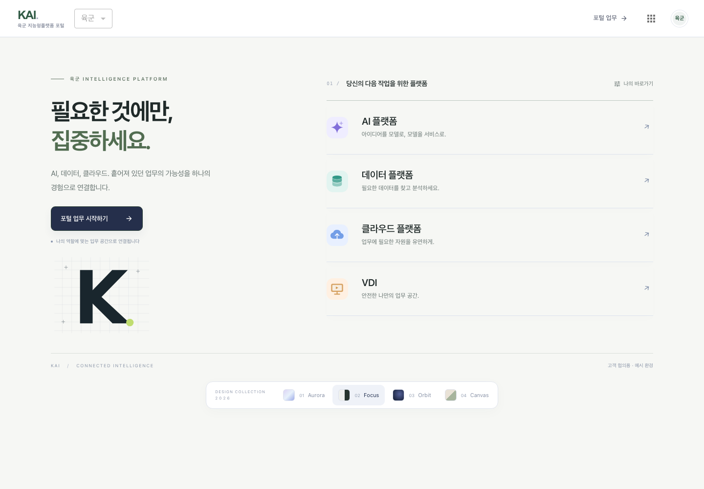
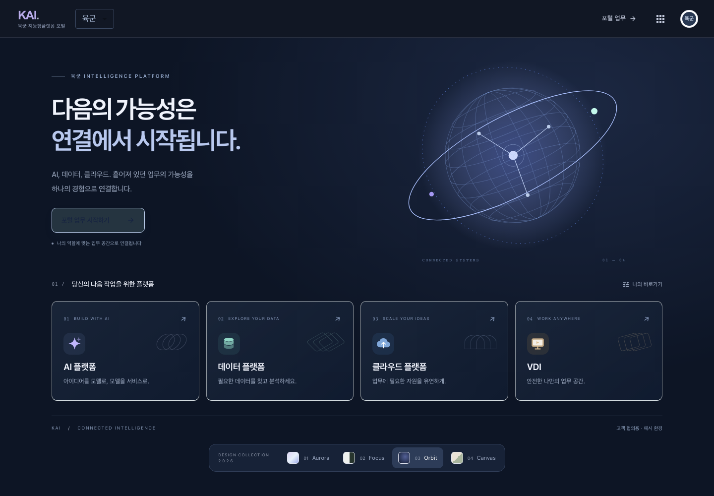
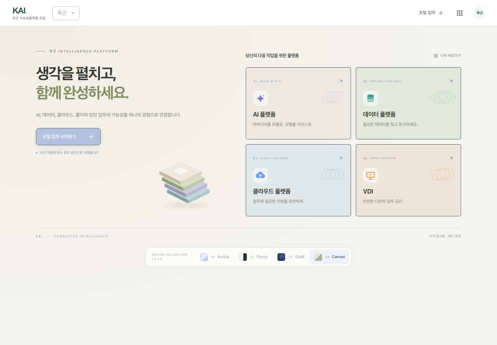
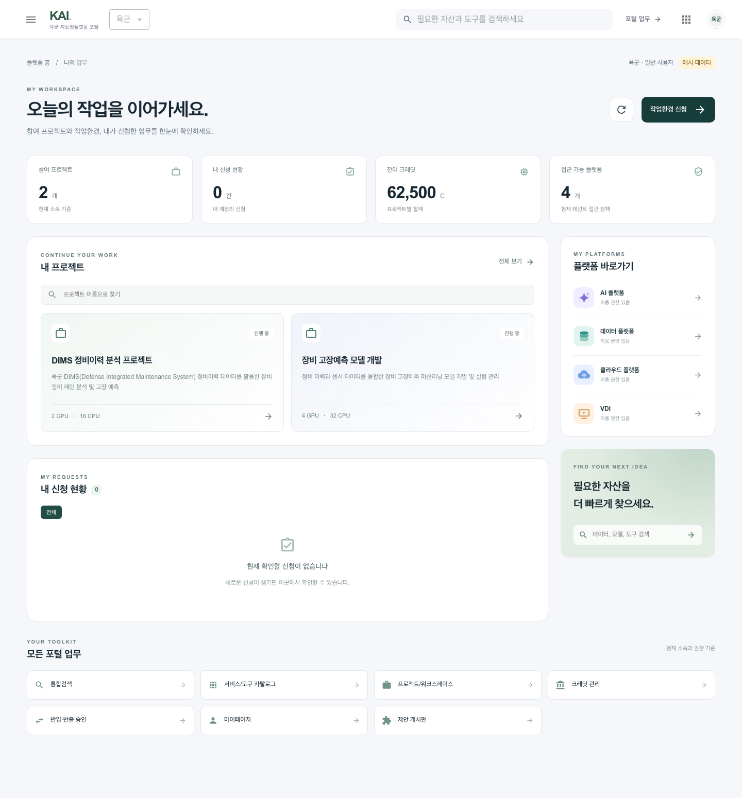
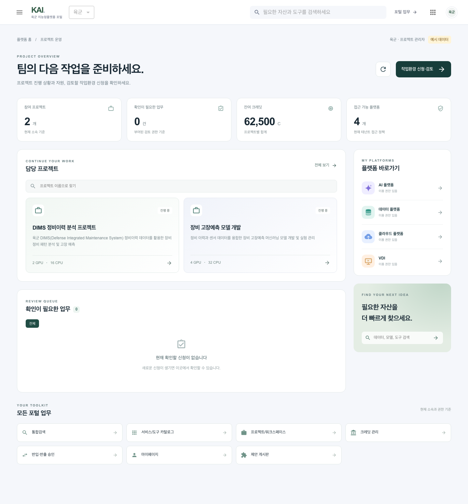
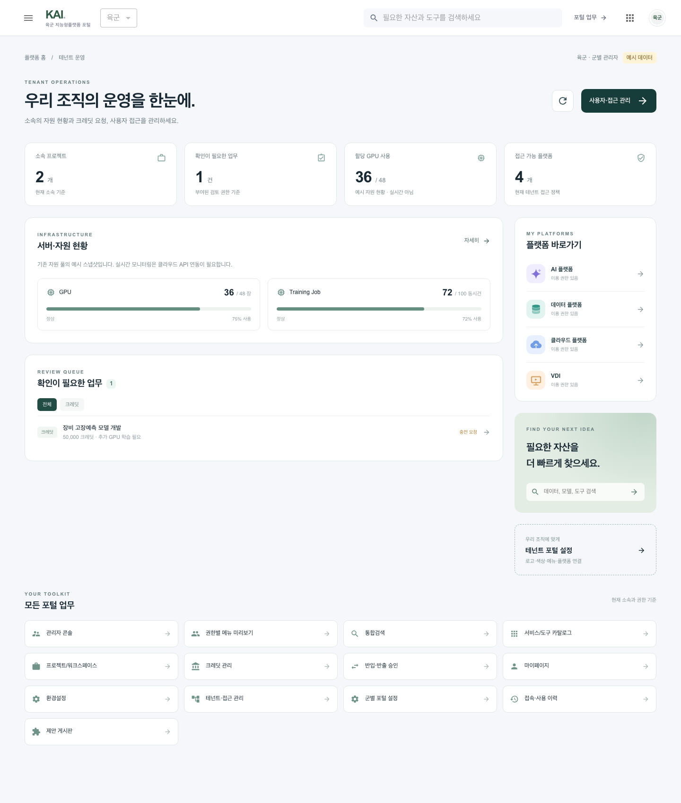
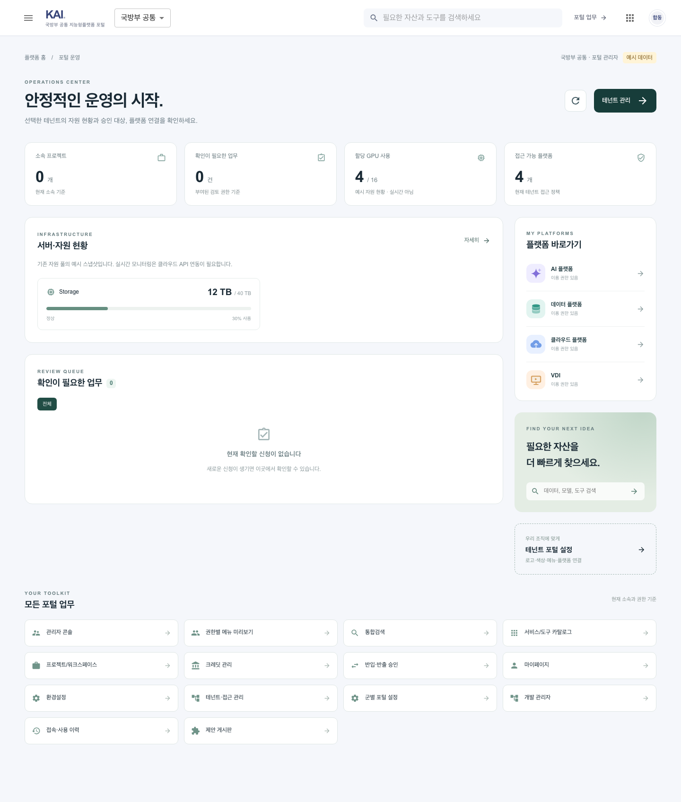
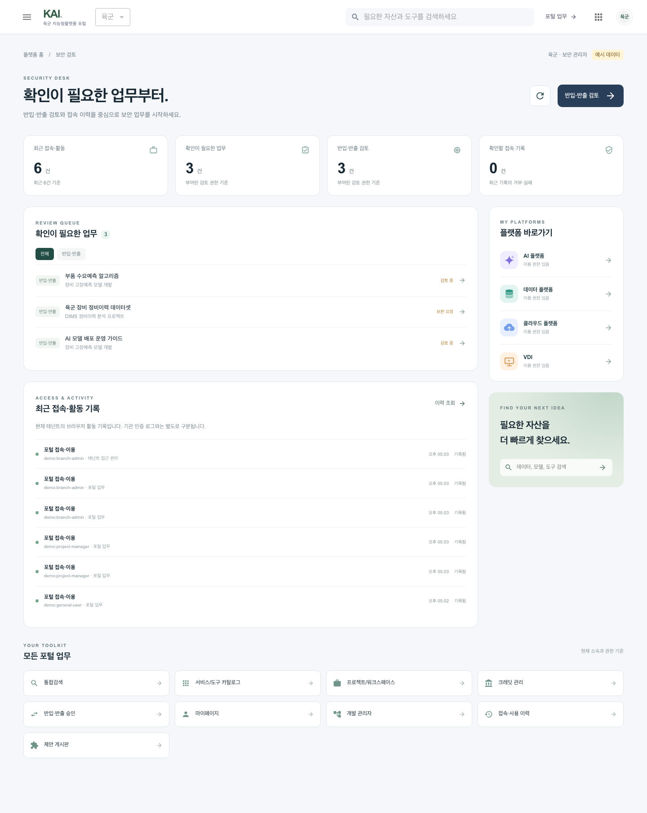
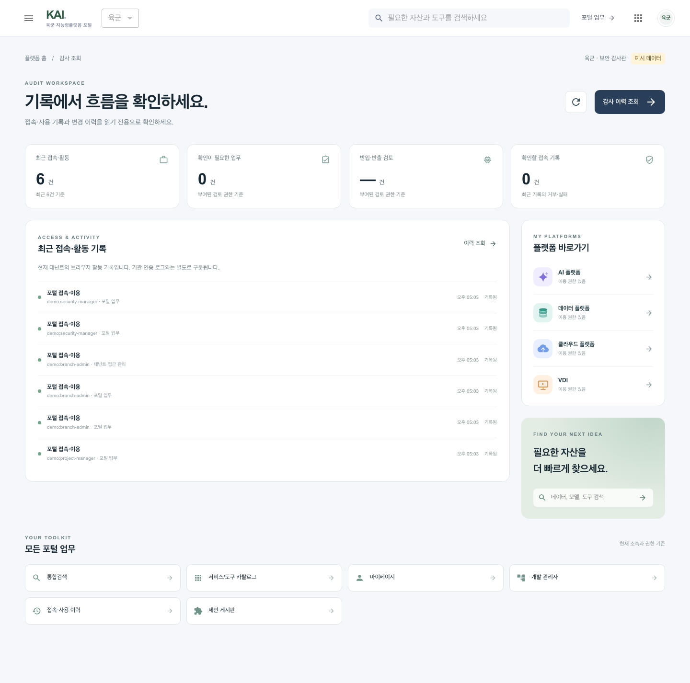

로그인 이후에는 네 개 플랫폼과 포털 업무에 집중합니다.아래 이미지는 실제 로컬 구현을 브라우저에서 캡처한 결과입니다. 운영 사이트 반영 전 검토본입니다.

리본 그래픽과 밝은 AI 포털 · 추천 기본안

여백과 목록에 집중한 업무형

미드나이트와 연결 구체

따뜻한 색조와 2×2 타일
기존 권한과 기능을 유지하면서 역할마다 먼저 필요한 화면을 보여줍니다. 자원과 프로젝트 수치는 예시 환경의 데이터입니다.





